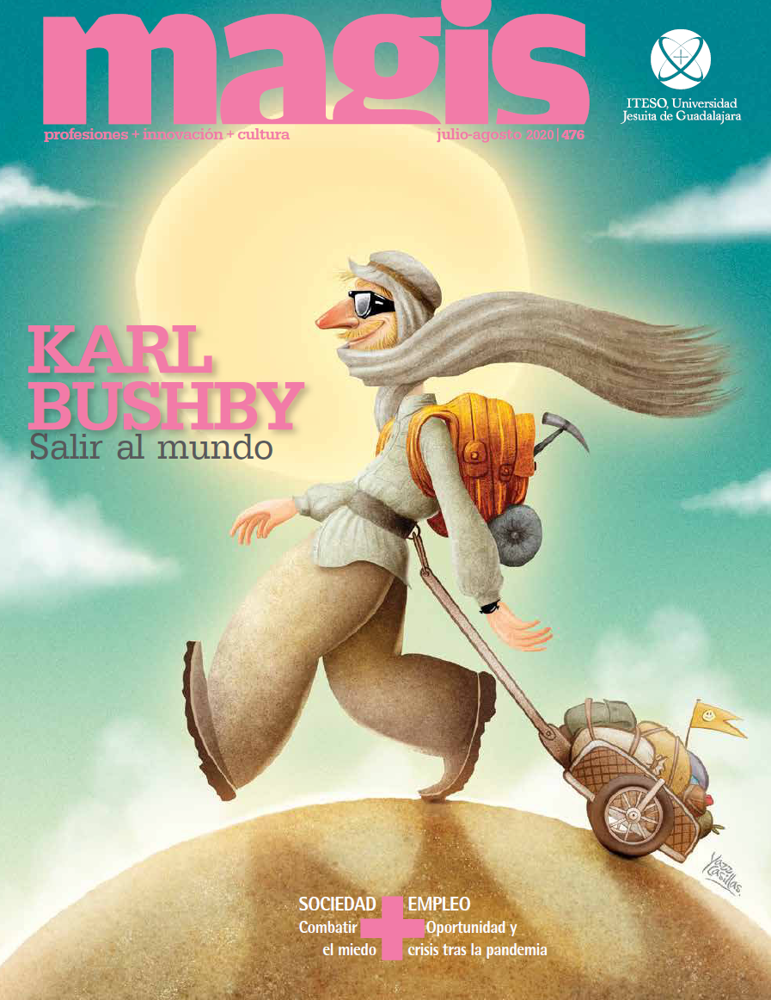

Toward the horizon

Karl Bushby is a professional adventurer currently attempting the longest unbroken walk around the Earth in history. He started his quest in 1998, and hasn't been back home in England in almost 20 years.
I met him in 2020 in Guadalajara, in the middle of the pandemic. It's needless to say his journey is nothing short of extraordinary. So I decided to interview him and write an article about his life, and pitched it to Magis Magazine in Mexico, who ended up making it the cover story of their July issue.